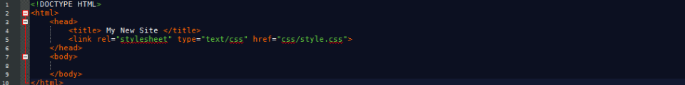

The SimpleFrame file structure is super easy to understand, this page will talk you through how to use and layout your new SimpleFrame website.
First, as always, we start the document with a !DOCTYPE HTML , and lay out our html, head and body tags. We can also at this time set out our title and link to our style sheet, style.css. Our code should look something like this:
We should also copy the style.css starter sheet over from our resources area. As this defines the basic styles and outlines of our new website.
Once we have completed this, we should set our basic margin colour - most probably the colour scheme of your company.
The nect pages of this documentation should give you headers, footers and content and also all of their code. Enjoy!
Return to Main Page!